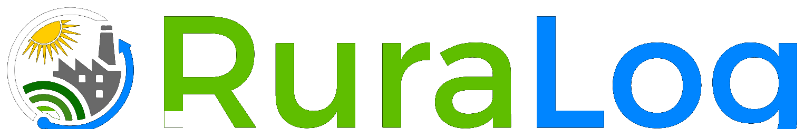

RuraLog é a plataforma de rastreabilidade inteligente que conecta o Açaí do Tocantins do campo à mesa — com inclusão digital do extrativista, conformidade ANVISA/MAPA e a janela de perecibilidade sob controle.
Sem rastro digital confiável, o produtor perde valor, a indústria perde previsibilidade e o consumidor não sabe a origem. No açaí, esse problema é agravado por uma biologia implacável: o fruto oxida em horas.
sabem o que é rastreabilidade — e só 13% realizam as ações obrigatórias.
da produção pode ser perdida por falhas de logística e armazenamento.
dos antioxidantes (antocianinas) se perdem em 36h de cadeia informal.
após a debulha, o escurecimento enzimático já compromete o lote.
O semáforo logístico do RuraLog é calibrado para a janela biológica do açaí — limiteHoras = 6, não dias.
Máxima retenção de antocianinas. Lote elegível à classificação Tipo A (Especial).
O sistema dispara alerta para priorizar o lote na fila de despolpamento.
Lote rebaixado na classificação e inspeção obrigatória pelo Controle de Qualidade.
Existe demanda regulatória real e não atendida por soluções que organizem origem, lote, movimentação e recall. É exatamente o que o RuraLog gera.
Exigem registro de produto, origem, destino, lote e documentos, da produção à comercialização.
Exige identificação de origem e lote na rotulagem do produto industrializado.
Para recolher produtos com risco, a indústria precisa localizar lotes, distribuição e destino — em minutos.
A INC 02/2018 obriga o arquivamento das informações por 18 meses após a expedição. Descumprir = multa e interdição.
Rastreamento digital ponta a ponta, do manejo do açaizal ao QR Code na embalagem. Clique em cada elo para ver os pontos de captura de dados.
{{ active.action }}
O campo precisa funcionar com pouca internet; a indústria precisa de registros confiáveis sem sistemas caros. Quatro diferenciais resolvem os dois.
App PWA com timestamp criptografado: o extrativista registra a debulha sem sinal, e o dado sincroniza ao alcançar cobertura. Pensado para o transporte fluvial do Bico do Papagaio.
Produto, lote, origem, destino, documentos e histórico de movimentação — estruturados conforme a INC 02/2018, prontos para auditoria.
A agroindústria define o que cada QR mostra: perfil B2B (laudos, classificação MAPA, temperatura) e B2C (origem, município, selo de frescor).
Ao registrar Podridão-do-cacho ou Broca-do-estipe, a IA estima a redução de polpa e avisa a fábrica com até 8 semanas de antecedência.
Cadastro offline de produção, lote em "rasas", insumos e comprador. O relógio de perecibilidade começa na debulha.
Recepção, branqueamento ≥80°C, CQ por sólidos totais e expedição — histórico pronto para auditoria.
Ana escaneia o QR e descobre o município de origem, o tipo de açaizal e o selo "processado em menos de 5h".
Dor: escoar a colheita em poucas horas por vias fluviais, sem internet.
Com RuraLog: registra a debulha offline e certifica a origem do seu açaí.
Dor: equilibrar a chegada caótica de lotes frescos com a capacidade da fábrica.
Com RuraLog: prioriza lotes pelo semáforo e gera registros prontos para o MAPA.
Dor: garantir que a cadeia de frio (−18°C) não foi rompida na distribuição.
Com RuraLog: dashboard de validade com alertas FIFO para girar o estoque congelado.
Dor: não sabe se o açaí é diluído ou de origem ética.
Com RuraLog: escaneia o QR e vê a saga do fruto, valorizando a bioeconomia do TO.
A gratuidade no campo acelera a adesão e gera o dado de origem. A receita vem de quem mais ganha com rastreabilidade, organização e recall.
Desenhado para a baixa conectividade do interior e para os dois polos produtivos do estado. Começa simples, com QR Code e registros — IoT e blockchain ficam no roadmap.
Agroextrativismo familiar de açaizais nativos, cooperativas e logística fluvial. O cenário-semente do RuraLog — máxima dor, máximo impacto social.
Agronegócio tecnificado e irrigado, processamento em menos de 4h. A mesma arquitetura escala para fazendas verticalizadas de larga escala.
Hoje: QR Code + registros digitais para as 426 indústrias do estado, em especial micro e pequenas. Amanhã: sensores IoT de cadeia de frio, blockchain e expansão para outras matérias-primas regionais — cupuaçu, pequi, baru.
Menos perdas, registros organizados e mais valor no açaí tocantinense.
Inclusão digital do produtor familiar e fortalecimento de cooperativas.
Menos desperdício de alimentos e valorização da bioeconomia da floresta.
Origem, lote e movimentação comprováveis — pronto para recall e fiscalização.